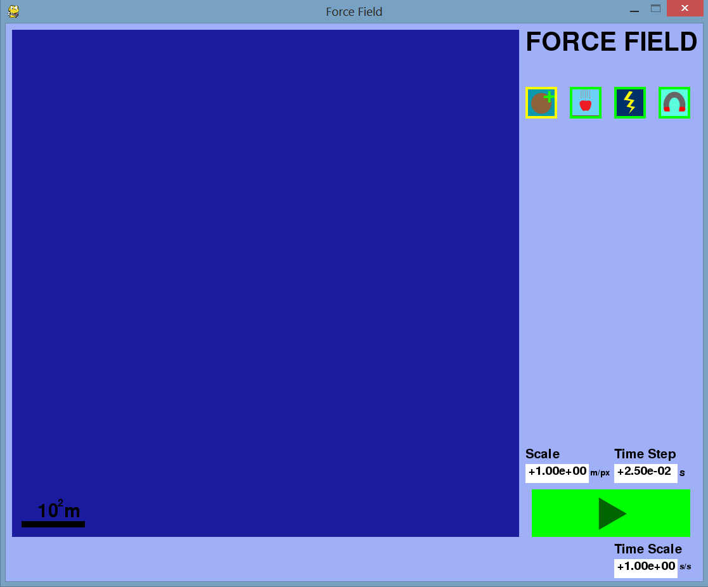
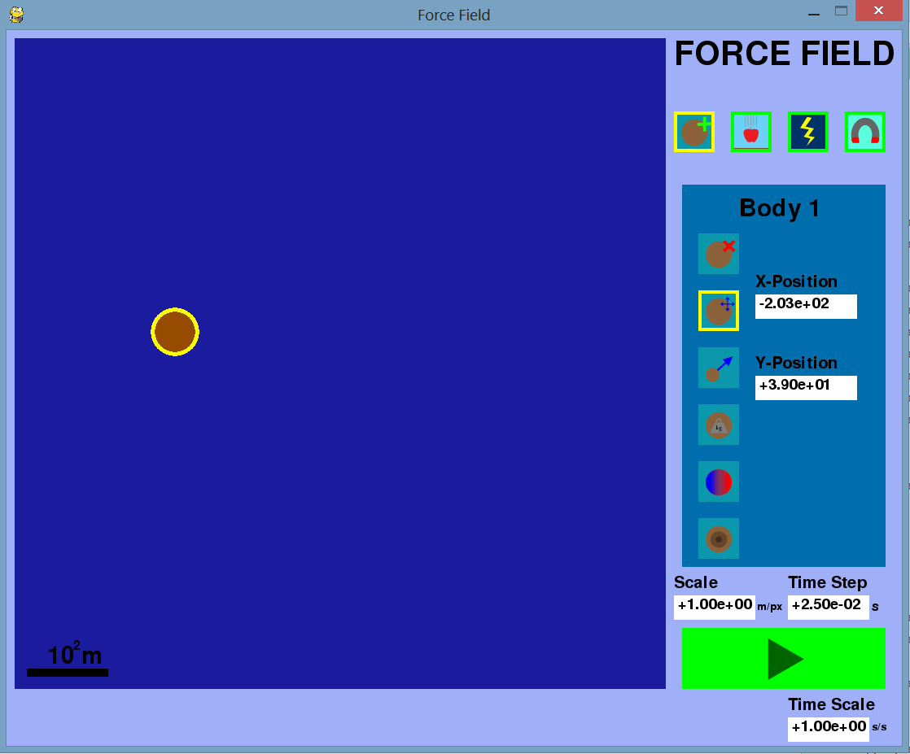
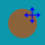
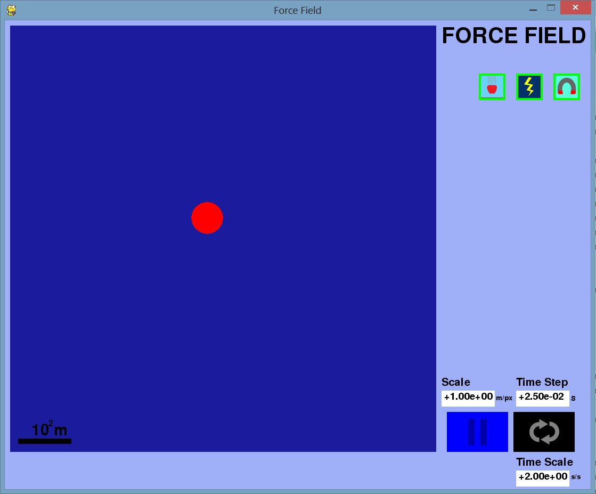

README for Force Field
by John Bell, IV
Force Field is a physics simulation app, capable of simulating the effects of the gravitational force, the
electric force, and the magnetic force. The simulation focuses on the interactions of uniform, spherical bodies,
which are of nonzero, finite size and mass. (The bodies may or may not be charged.) The simulation uses a second-order left-hand Euler's Method to approximate
solutions to the Newton's Second Law second-order differential equation ΣF=ma. Newton's Law of Gravitation and the Lorentz Force Law are used to determine ΣF.
All object collisions are inelastic and follow conservation of momentum, conservation of mass, and conservation of momentum. The physics calulation environment is Newtonian
and non-relativistic.
Force Field is a GUI app, so its use after launching does not involve use of a command-line interface.
Main Interface (Setup Mode)

This is the launch screen of the app. The app has two primary modes, Setup Mode and Run Mode, as well as one secondary mode, Intervention Mode. Setup Mode is started by default, and it allows the user to create bodies
and modify their initial conditions. Run Mode activates the passage of time, implementing the chosen physics to simulate the motion of the bodies.
Text Box Editing Instructions
To begin editing a text box, click on it. Use the backspace or delete keys to remove characters from the right side.
The text box input accepts the characters 1234567890-+.eE (These characters are the elements of scientific notation.) Once the intended floating-point number has been entered,
click out of the text box, preferably in the light blue background area. (If a text input is not a legitimate floating-point number, it will be rejected.)
In the bottom-right of the window you will find three text boxes surrounding the Run button:
| Scale | This controls the spatial display scale of the simulation. Its value gives the distance covered by one pixel. (Since the simulation display
is 800x800 pixels, the default scale of 1 gives an 800m x 800m display.) A scale bar is also provided in the bottom-left of the simulation window, for convenience. |
| Time Step | This controls the time step of the second-order Euler's Method governing simulation. Note that, in order for the simulation to run,
(Time Step) must be less than (0.025 s)*(Time Scale). |
| Time Scale | This controls the ratio of simulation time to GUI time; For example, if (Time Scale) is 100, 100 seconds pass in the simulation
for every second the user percieves. (Time Scale) is 1 by default (real-time simulation). |
Buttons
 Add Body: This button toggles the body-adding functionality of the app. When activated, simply click within the bounds
of the blue simulation window to add a new body.
Add Body: This button toggles the body-adding functionality of the app. When activated, simply click within the bounds
of the blue simulation window to add a new body.
 Toggle Gravity: This button toggles the effect of gravitational forces in the system.
Toggle Gravity: This button toggles the effect of gravitational forces in the system.
 Toggle Electrostatics: This button toggles the effect of electrostatic forces in the system.
Toggle Electrostatics: This button toggles the effect of electrostatic forces in the system.
 Toggle Magnetism: This button toggles the effect of magnetic forces in the system.
Toggle Magnetism: This button toggles the effect of magnetic forces in the system.
 Run: This button initiates the simulation.
Run: This button initiates the simulation.
Attribute Editor (Setup Mode)

Clicking on a body selects it and opens its attribute editor (AE). The selected body's name is displayed at the top of the AE. Also in the AE are the options to change each of the selected
body's two vector attributes and three scalar attributes, as well as the option to delete the selected body.
Buttons
 Delete Body: This button deletes the selected body.
Delete Body: This button deletes the selected body.
 Body Position: This button allows the user to edit the initial position of the selected body.
When Body Position is active, a body can also be relocated by dragging it with the mouse.
Body Velocity: This button allows the user to edit the initial velocity of the selected body.
Body Mass: This button allows the user to edit the mass of the selected body. (This mass is both inertial and gravitational.)
 Body Charge: This button allows the user to edit the charge of the selected body. (This charge is used in determination of the Lorentz force.)
Body Charge: This button allows the user to edit the charge of the selected body. (This charge is used in determination of the Lorentz force.)
Body Radius: This button allows the user to edit the radius of the selected body. (The radius is used for collision determination.)
Run Mode

In Run Mode, the simulation is running, according to the physics chosen by the user.
Buttons
Pause: This button pauses the simulation and enters the temporary analog of Setup Mode, Intervention Mode. All controls within Intervention Mode
(except the Reset button) are exactly the same as in Setup Mode. Changes made in Intervention Mode will not be recovered upon Reset.
 Reset: This button fully stops the simulation and resets the system state to the initial state specified by the most recent Setup Mode session.
Reset: This button fully stops the simulation and resets the system state to the initial state specified by the most recent Setup Mode session.